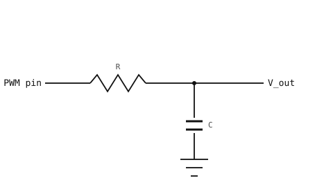

3.13. Generování analogového signálu pomocí PWM a RC filtru¶
ADC čte napětí na pinu. Opak – vytvoření mezilehlého napětí mezi 0 V a Vcc na pinu – je obtížnější, protože výstup GPIO umí pouze budit své dvě napájecí úrovně. Standardní náhradou je přepínat pin mezi úrovněmi dostatečně rychle na to, aby průměrné napětí bylo to, na čem vám záleží.
3.13.1. Pulzně šířková modulace¶
Pulzně šířkově modulovaný (PWM) signál je obdélníkový průběh na pevné frekvenci, jehož doba v úrovni high – podíl každého cyklu strávený na Vcc namísto na zemi – je nastavena softwarem. Tento podíl je střída. Průměrné napětí průběhu je střída krát Vcc:
V_avg = duty × Vcc
25% střída dává průměr Vcc / 4; 50% střída dává Vcc / 2; 75% střída dává 3 × Vcc / 4.

PWM se střídou 25 %, 50 % a 75 %. Průměrné napětí sleduje střídu.¶
Frekvence se nastavuje při konfiguraci PWM; střída je to, co software mění za běhu. Třída machine.PWM obaluje hardwarový kanál časovače, který generuje průběh bez pomoci CPU – jakmile je nakonfigurován, signál pokračuje na zvolené frekvenci a střídě, dokud se nezmění.
3.13.2. Třída machine.PWM¶
Zkonstruujte instanci PWM s pinem a počáteční frekvencí a střídou:
from machine import PWM, Pin
pwm = PWM(Pin("P7"), freq=20_000, duty_u16=32768)
Tím se spustí obdélníkový průběh 20 kHz se střídou 50 % na P7. Dvě metody mění výstup za běhu:
pwm.duty_u16(16384) # change to 25 % (16384 / 65535)
pwm.freq(5_000) # change to 5 kHz
duty_u16() přijímá 16bitové celé číslo bez znaménka, kde 0 mapuje na „vždy low“ a 65535 na „vždy high“. freq() nastavuje nosnou frekvenci v hertzích.
Poznámka
Každý kanál PWM na stejném hardwarovém časovači sdílí jeho frekvenci. Zavolání freq() na jednom kanálu změní každý další kanál připojený k tomuto časovači. Použijte kanály různých časovačů, když výstupy musí běžet na různých frekvencích.
Zavoláním deinit() uvolníte kanál časovače, když již výstup není potřeba.
3.13.3. Průměrování pomocí RC dolnopropustného filtru¶
Surový PWM není plynulé napětí; je to obdélníkový průběh, jehož průměr je tím, co chceme. Chcete-li tento průměr získat, proveďte PWM přes dolnopropustný filtr – stejnou kombinaci rezistoru a kondenzátoru, jakou používá odstraňování zákmitů spínače v Odstraňování zákmitů (debouncing).

PWM přes RC dolnopropustný filtr: kondenzátor zprůměruje obdélníkový průběh na stejnosměrné napětí úměrné střídě.¶
Mezní frekvence filtru – hranice mezi frekvencemi, které propouští, a těmi, které blokuje – je dána stejným součinem RC, který udával časovou konstantu obvodu pro odstraňování zákmitů:
f_c = 1 / (2π × R × C)
Aby filtr získal čisté stejnosměrné napětí ze vstupu PWM, musí být mezní frekvence mnohem nižší než samotná frekvence PWM. Stejnosměrná složka (frekvence 0) projde beze změny; základní harmonická PWM (na frekvenci PWM) je utlumena zhruba f_c / f_PWM. Poměr 1 / 200 sníží zbytkové zvlnění na výstupu asi na 0.5 % rozkmitu vstupu.
Rozumný výchozí bod pro pomalu se měnící žádanou hodnotu:
Frekvence PWM
f_PWM = 20 kHz– výrazně nad slyšitelným pásmem a pro časovač snadno čistě generovatelná.Hodnoty filtru
R = 1.6 kΩ,C = 1 µF– dávajíf_c = 1 / (2π × 1.6 kΩ × 1 µF) ≈ 100 Hz.
200násobné potlačení na nosné snižuje plný rozkmit PWM zhruba na Vcc / 200 zbytkového zvlnění na V_out – asi 16 mV při 3,3 V.
Dvě praktické poznámky:
Výstupní impedance filtru je zhruba
R. Jakákoli zátěž za filtrem, která odebírá proud, měníRa zátěž v dělič, jenž stahujeV_outpod ideální průměr, přesně jako dělič na stránce Čtení analogového signálu pomocí ADC. Napájejte pin ADC nebo vysokoimpedanční buffer, nikoli zátěž odebírající miliampéry.Kondenzátoru trvá ustálení asi
5 × R × C ≈ 8 mspři změně střídy;V_outo tuto dobu zaostává za nastavením střídy. Pro žádanou hodnotu, která se musí aktualizovat rychleji, zvyšte mezní frekvenci (menšíRneboC) a počítejte s větším zvlněním.